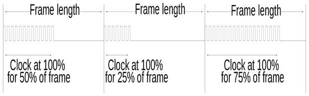
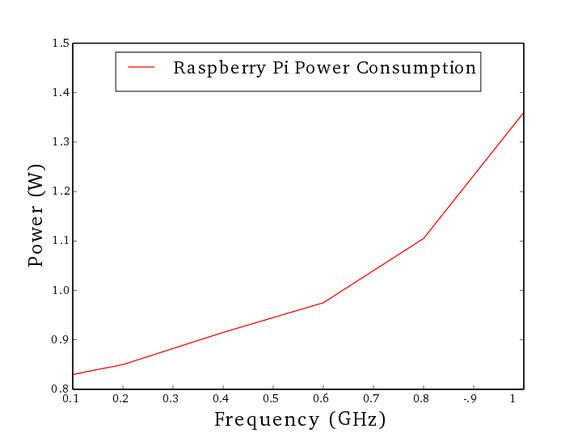

A common way to save energy with computers is exploring the CPU frequency switch capability. The Raspberry Pi uses an ARM1176JZF-S processor and according the ARM on-line documentation this CPU can be run in any frequency under the maximal one, supported by the processor. To be able to performance any frequency the ARM11 architecture emulate a continuous DVS(Dynamic Voltage Scaling), in a discrete processor, by holding the voltage at the maximum level and then switch the system clock between the maximum frequency and off. In order to apply this the IEM software - it is a software that runs on ARM processor to classify the types of activity and to analyze their processor utilization patterns for global prediction about the future performance required by the system - defines frames that are directly related to the performance level. In Figure 1 the system performance requested in the first frame is 50%, so the CPU work at maximum frequency for half of the frame and than it is turned off for the rest of the frame, in the second frame a performance of 25% of the CPU is requested, and then 75% in the last frame.

To test the Rasppberry Pi DVS capability the two experiments were set, the first on consist in verify the effect of different frequencies over and application CPU execution time and the other is about the power consumption, all the tests were done using Arch Linux ARM. To change the frequency the command cpufreq-set was execute, here is an example about how to use this command:
$ cpufreq-set -f 0.2 GHz
in this case 0.200 is the desired frequency in GHz and -f defines the new frequency.
In order to test the effect of continuous DVS emulation in a system like the Raspberry Pi a code witch the execution depends only of the CPU was executed and the time used by the CPU was measured. The code used in this experiment was:
int main(int argc, char *argv[])
{
int limit;
if (argc == 0) {
printf("%d", argc);
printf("1 argument\n");
return(0);
}else {
limit = atoi(argv[1]);
}
int i;
struct timespec startCpuTime, stopCpuTime, startTotalTime, stopTotalTime;
clock_gettime(CLOCK_THREAD_CPUTIME_ID, &startCpuTime);
for(i=0;i
log(2*i)+exp(i)+pow(2,i)*i;
clock_gettime(CLOCK_THREAD_CPUTIME_ID, &stopCpuTime);
double cpuUsedTime = ((double) (stopCpuTime.tv_sec - startCpuTime.tv_sec)
+ (stopCpuTime.tv_nsec - startCpuTime.tv_nsec)
/ (double) 1000000000L);
double totalUsedTime = ((double) (stopTotalTime.tv_sec - startTotalTime.tv_sec)
+ (stopTotalTime.tv_nsec - startTotalTime.tv_nsec)
/ (double) 1000000000L);
printf("CPU used time = %g and application total time= %g \n", cpuUsedTime,
totalUsedTime);
return 0;
}
The above code is available at the repository [4] . The code is very simple and it basically consists on the execution of a for while i is lower than limit and the execution time is measured by use the clock_gettime() function from time.h, to get the exactly time of the CPU usage the clock_gettime() used the parameter CLOCK_THREAD_CPUTIME. To compile the program the GCC was used with the flags -lrt (this flag is needed to use the clock_gettime()) and -lm(due the exponential function) . By executing the above code, and varying the frequency at steps of 0.1GHz in a range of 0.2GHz to 0.7GHz the CPU execution time was measured and plotted in Figure 2.

In order to realize an experiment to verify the power consumption according the frequency an Tenma 72-9380A multimeter was used and the Raspberry Pi were powered by GPIO interface. For the experiments the frequencies of: 0.1GHz, 0.2GHz, 0.4GHz, 0.6GHz, 0.8GHz and 1 GHz were used. To measure the power consumption the above application were executed about 10s and the mean power consumption was used to plot the graphic in Figure 3. As expected the power consumption increased according the frequency with a behavior expressed by \alpha f^3.
It is important to notice in between frequencies 0.2GHz-0.6GHz, 0.6GHz-0.8GHz and 0.8GHz-1GHz the power line changes its increasing rate from the previous interval, with the exception of the interval from 0.4GHz to 0.6GHz. This exception is caused because the ARM DVS doesn't need to change the voltage to simulate 0.4GHz and 0.6GHz, and when only the frequency changes the power consumption reduction is proportional to the increase of time need to execute the program.
As a conclusion of the first experiment it is possible to confirm that the continuous DVS implies in different execution time according the used frequency. And According the second experiment it is clear that the power changes according the frequency, but the frequency modification only result in power save if the voltage changes too.
{kind=link}
Comments